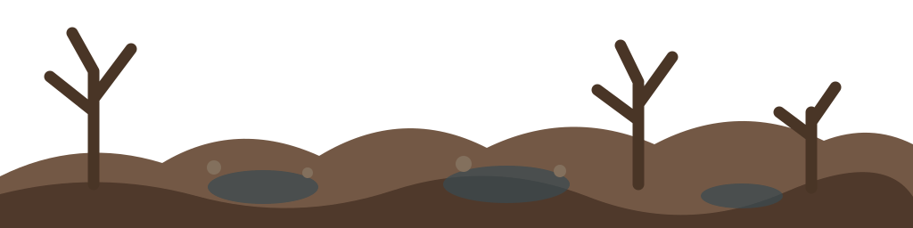
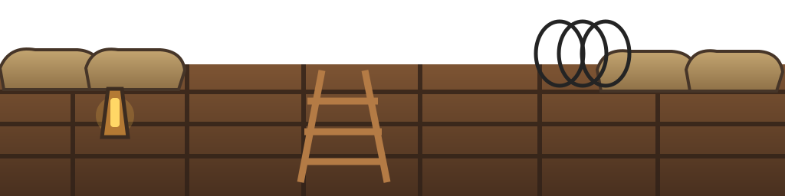
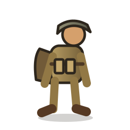

Improved Trench Run Prototype
Illustrated WWI artwork with the proven three-lane gameplay preserved.
Distance 0m
Score 0
Stamina 3
Accuracy 100%
Streak 0



Illustrated WWI artwork with the proven three-lane gameplay preserved.


